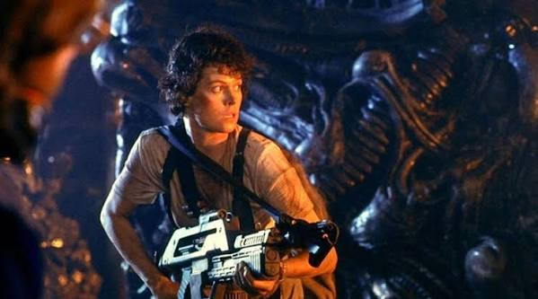
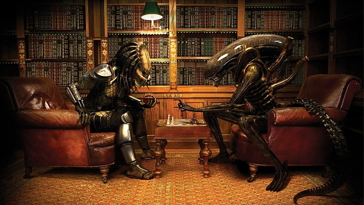
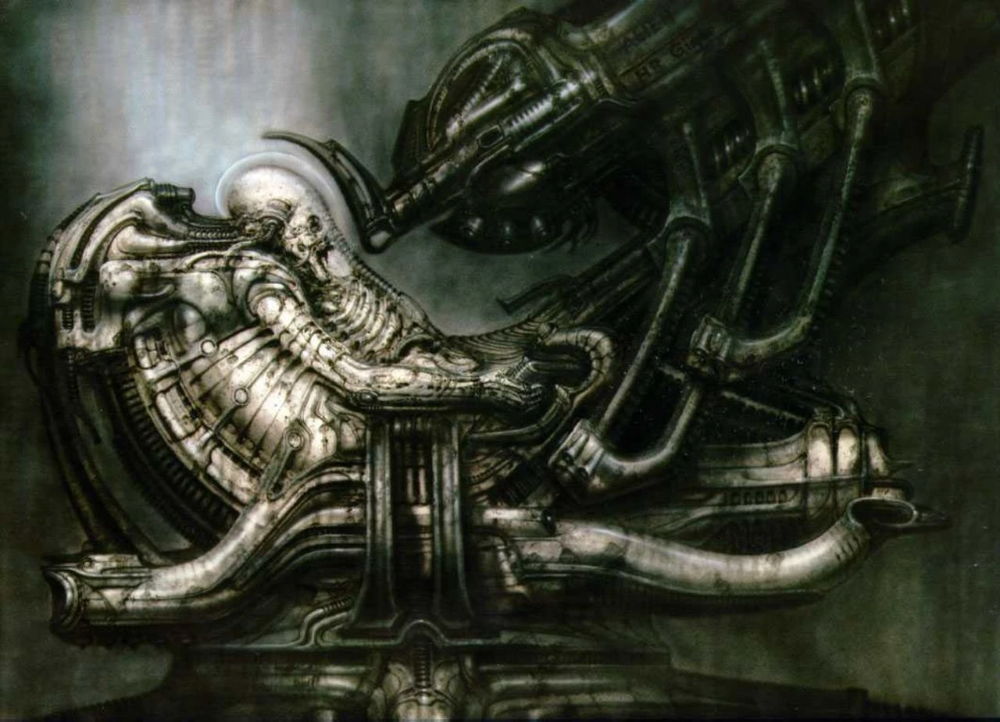

All the Movies

Ripley holding a flamethrower and pulse rifle in the alien hive. (Aliens, 1986 - hollywoodrelics.com)
The main Alien films are listed below in order of release. Ellen Ripley serves as the protagonist of the first four.
- Alien (1979)
- Directed by Ridley Scott. The crew of the Nostromo unknowingly brings a deadly alien aboard their ship.
- Aliens (1986)
- Directed by James Cameron. Ripley returns to LV-426 alongside a squad of Colonial Marines.
- Alien 3 (1992)
- Directed by David Fincher. Ripley crash-lands on a remote prison planet, unaware that a Xenomorph came with her.
- Alien: Resurrection (1997)
- Directed by Jean-Pierre Jeunet. Two hundred years later, scientists clone Ripley to recover the Xenomorph embryo inside her.
- Prometheus (2012)
- Directed by Ridley Scott. A prequel that follows a scientific expedition searching for the origins of humanity.
- Alien: Covenant (2017)
- Directed by Ridley Scott. A colony ship detours to an uncharted planet, with deadly consequences.
- Alien: Romulus (2024)
- Directed by Fede Álvarez. Young colonists scavenging an abandoned space station encounter the Xenomorph.
Spin-Offs and TV

A Predator and a Xenomorph face off over a game of chess. (Fan art, wallpaperflare.com)
Although they fall outside the main film series, these entries still expand the Alien universe.
- Alien vs. Predator (2004)
- Directed by Paul W. S. Anderson. An expedition in Antarctica uncovers an ancient pyramid that Predators use as a hunting ground for Xenomorphs.
- Aliens vs. Predator: Requiem (2007)
- Directed by the Brothers Strause. A Predator-Xenomorph hybrid known as the "Predalien" crash-lands near a small Colorado town.
- Alien: Earth (2025)
- A television series created by Noah Hawley. Set in 2120, two years before the original film, it follows the aftermath of a spaceship carrying alien specimens crashing on Earth.
I enjoyed the lead characters in Alien: Earth, and I thought the pacing was well handled. What the series lacked in large-scale action, it made up for with strong suspense, memorable alien encounters, and unexpected twists.
In my opinion, the Alien vs. Predator films should be considered part of the franchise. They feature the Xenomorph alongside the Predator, another series I enjoy.

H.R. Giger's original painting of the Space Jockey seated in its pilot chair. (monsterlegacy.net)